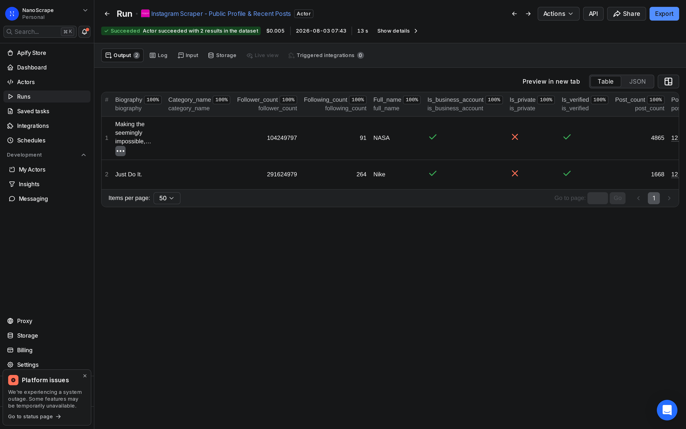
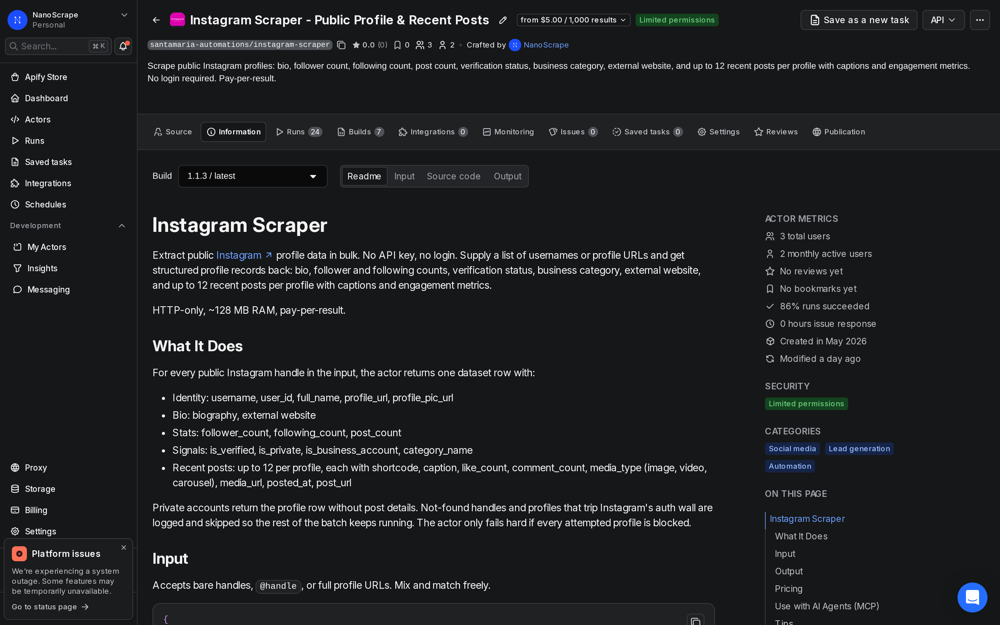
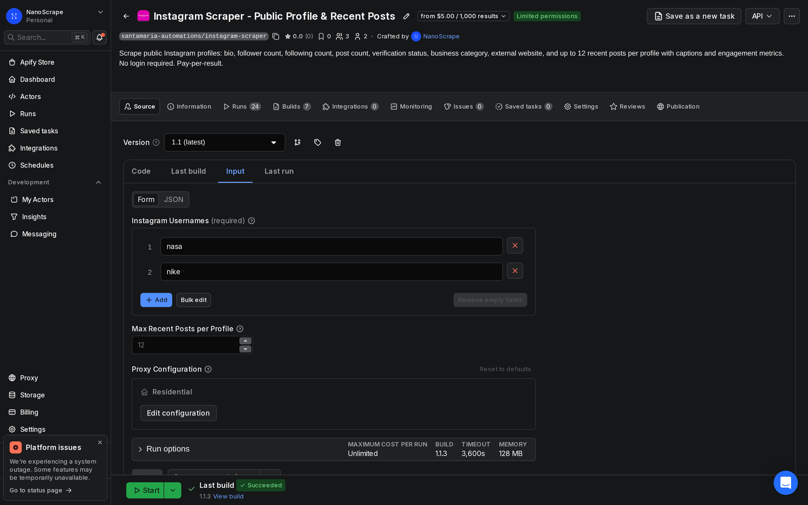
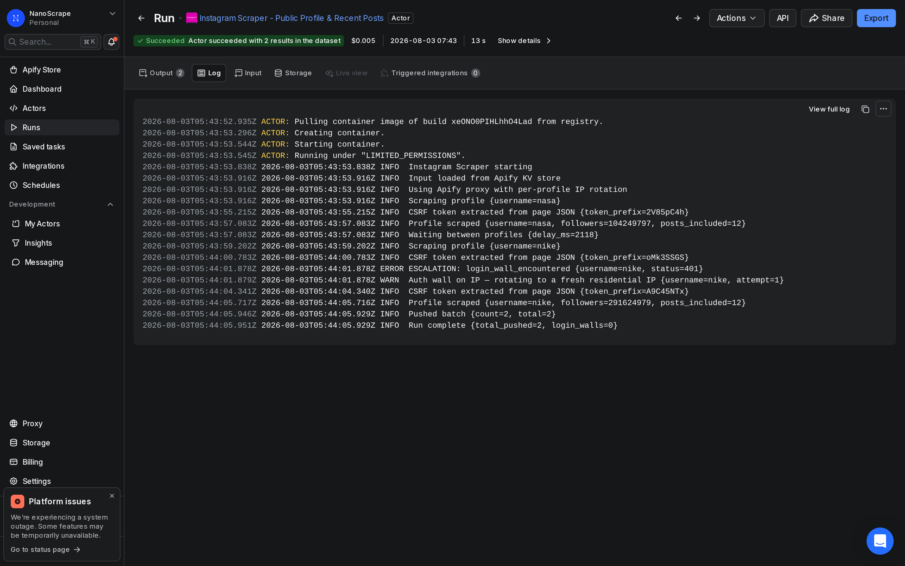

How to Scrape Instagram Follower Counts Without the Instagram API
Supply a list of Instagram handles and get back follower counts, following counts, post totals, verification badges, and business category for each account. Set maxPostsPerProfile to 0 to skip post fetching entirely and make each run faster. HTTP-only, no login, no API key. About $5 per 1,000 profiles.

In this tutorial
Who this is for
This guide covers one specific task: pulling follower counts, following counts, post totals, verification status, and business category for a list of public Instagram accounts in one automated batch. It is not about extracting post content or captions.
- Influencer marketers who need to vet dozens of creator accounts before a campaign: check follower counts, verify the blue badge, confirm the account is public and business-categorized.
- Competitive researchers tracking a set of brand or creator accounts weekly: schedule a recurring run and see how follower counts move after product launches or campaigns.
- Agencies and data teams building dashboards or CRM enrichment pipelines: pull structured profile stats for any handle in bulk and load them into a spreadsheet or database.
maxPostsPerProfile to 0 in the input. The run finishes faster, and the cost per profile is the same. Only flip it to a number above 0 if you also need recent post data.What you get
For each public handle in your list, the actor returns one dataset row. For follower monitoring the fields that matter most are:
username: the handle as entereduser_id: Instagram's stable numeric ID. Stays the same even if the handle changes, so you can join across runs.follower_count: current follower total at scrape timefollowing_count: number of accounts this profile followspost_count: total posts on the profileis_verified:truewhen the account has the blue checkmarkis_private:truefor private accounts. Follower counts are still returned; post details are not.is_business_account:truefor creator or business profilescategory_name: the business category label the account owner set, e.g. "Retail Company" or "Musician/Band"biographyandwebsite: the bio text and any external link
Here is what a real result looks like from a run we performed on 2026-08-03:
{
"username": "nasa",
"user_id": "528817151",
"full_name": "NASA",
"biography": "Exploring the universe and our home planet.",
"website": "https://www.nasa.gov/",
"follower_count": 104249797,
"following_count": 91,
"post_count": 4865,
"is_verified": true,
"is_private": false,
"is_business_account": true,
"category_name": "Science, Technology & Engineering",
"profile_url": "https://www.instagram.com/nasa/",
"scraped_at": "2026-08-03T05:43:57.083Z",
"posts": []
}posts array is because we set maxPostsPerProfile to 0 for a faster follower-count run.Prerequisites
- A free Apify account. Sign up at the actor page. The free tier gives you $5 of usage credit per month, enough for around 1,000 profile lookups.
- A list of public Instagram handles you want to monitor. You can use bare handles (
nasa), @-prefixed handles (@nasa), or full profile URLs. Mix and match freely.
Open the actor on Apify
- Go to the NanoScrape Instagram Scraper on Apify.
- Click Try for free. Sign up with Google or email if you do not have an account.
- Apify takes you to the actor input page in Apify Console.

Build your account list and configure the input
In Apify Console, switch to the Input tab. Paste your handles into the usernames array. For a pure follower-count run, set maxPostsPerProfile to 0.
{
"usernames": [
"natgeo",
"nasa",
"nike",
"adidas",
"redbull"
],
"maxPostsPerProfile": 0,
"proxyConfiguration": {
"useApifyProxy": true
}
}usernames(required): your list of handles. Bare handles, @-prefixed handles, and full profile URLs all work.maxPostsPerProfile: set to0to skip post content entirely. The run is faster and the cost per profile is the same.proxyConfiguration: leave the default (useApifyProxy: true). Apify's datacenter proxies handle IP rotation automatically.

Run and check results
- Click Start at the bottom of the input page.
- Watch the live log. For a batch of 100 handles with
maxPostsPerProfile: 0, the run typically finishes in under two minutes. - When status shows Succeeded, click Results in the top tab bar to open the dataset.
- Use Export to download as JSON, JSONL, CSV, or XLSX.

To compare competitor follower counts side by side, use the Table view in the Results tab. Each column maps to one output field. You can sort by follower_count to rank accounts immediately.
Track follower growth over time
A one-time scrape gives you a snapshot. To track growth, schedule the same run on a recurring interval. Each run produces a new dataset. You can export those datasets and compare timestamps in a spreadsheet to calculate weekly or monthly follower changes.
Set up a scheduled run in Apify Console
- Open the actor in Apify Console.
- Click the Schedules tab and create a new schedule.
- Set the cron expression for your cadence. Daily at midnight UTC is
0 0 * * *. Weekly on Mondays is0 0 * * 1. - Paste your monitoring list into the scheduled run's input. Apify saves the input with the schedule.
Export to Google Sheets for trend charts
After each run, download the dataset as CSV and append the rows to a Google Sheet. Add a run_date column (the date you downloaded), then chart follower_count over time per account. For an automated pipeline that skips the manual download step, use n8n (see the next section).
Automate with n8n or Make
You can trigger the actor automatically and route the results into Google Sheets, a database, or a Slack alert without writing any code.
n8n
Add a Schedule Trigger node set to run weekly or daily. Connect it to an Apify: Run an Actor and get dataset node. Set the Actor ID to santamaria-automations/instagram-scraper, set maxPostsPerProfile to 0 in the input, and wire the output to an Append to Google Sheet node. Every scheduled trigger writes a fresh row of follower counts to your sheet.
Need a managed n8n instance with no server setup? n8n Cloud runs your workflows around the clock and includes the Apify node out of the box.
Make (formerly Integromat)
Use an HTTP module to POST to the Apify run-sync endpoint with your input JSON as the body. The response contains the dataset items. Route them to a Google Sheets module or a data store. The run-sync endpoint blocks until the run finishes, so a single HTTP call returns the complete dataset.
POST https://api.apify.com/v2/acts/santamaria-automations~instagram-scraper/run-sync-get-dataset-items?token=YOUR_TOKENrun-sync-get-dataset-items endpoint has a timeout. For lists over ~200 handles, start the run with /runs, poll the run status, then read the dataset once the status is SUCCEEDED.What it costs
- Actor start: $0.001 per run regardless of batch size.
- Per profile scraped: $0.005 per row written to the dataset. 100 profiles costs $0.50 plus $0.001 to start.
- Free tier: Apify gives you $5 per month, which covers around 1,000 profile lookups.
For a weekly monitoring run of 50 competitor accounts, the total cost is $0.001 + (50 x $0.005) = $0.251 per run, or roughly $1 per month.
FAQ
Do I need an Instagram account or Meta API key to use this?
No. The actor reads publicly available profile data over HTTP. You do not need a personal Instagram login, a Meta developer app, or any Instagram-issued credentials. A free Apify account is all you need.
Can I get the actual list of followers, not just the count?
No. This actor returns the follower count, not the list of individual followers. Instagram requires a login to view a full follower list, so that data is not publicly available without authentication. If you need the count for monitoring or benchmarking purposes, this actor handles it well.
What happens with private accounts?
Private accounts still return the profile row, including follower count, following count, and bio. The actor sets is_private: true in the output. Post details are not returned for private accounts.
Can I run this on a schedule to track changes over time?
Yes. In Apify Console, open the actor and click Schedules to set up a recurring run. You can use a daily or weekly cron expression. Each run creates a new dataset. Export datasets over time and compare timestamps in a spreadsheet to track follower growth.
How fast is a follower-count run?
With maxPostsPerProfile set to 0, the actor skips post fetching and only retrieves the profile stats page for each handle. A batch of 100 handles typically finishes in under two minutes.
Is scraping public Instagram follower counts legal?
Scraping publicly visible data is generally permitted in most jurisdictions. The hiQ Labs v. LinkedIn ruling in the US established that accessing public data does not violate the Computer Fraud and Abuse Act. That said, Meta's Terms of Service restrict automated scraping. The legal picture varies by country and use case. Consult a lawyer before using the data commercially or at high volume.
What if the actor encounters an auth wall mid-run?
If Instagram temporarily requires login for unauthenticated traffic, the actor stops and logs an escalation message rather than silently returning empty rows. You will see it in the run log. Try splitting your batch into smaller runs or waiting a few hours before retrying.
Related resources
- Instagram Scraper actor page: Full specs, pricing tiers, and comparison with alternatives.
- Instagram Scraper on Apify: Actor README, input schema, and complete field reference on Apify Store.
- How to Scrape Instagram Profiles and Posts: The same actor configured for post content extraction: captions, like counts, media URLs, and up to 12 recent posts per profile.
- Website Contact Extractor: Enrich accounts that list an external website by extracting team emails, phones, and names.
- LinkedIn Company Scraper tutorial: Pull follower counts and company stats from LinkedIn to complement your Instagram research.